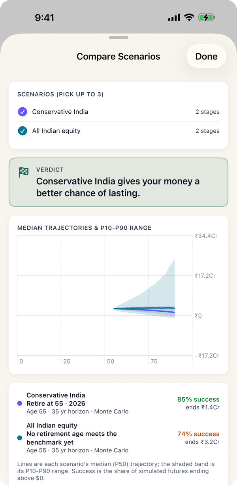

The usual advice is to own less equity as you age. The usual counter-argument is that a 35-year retirement needs growth. Both are right about different things: equity raises the average and widens the spread, and once you are withdrawing every year, the bad end of the spread is what runs a plan out. The tables below run the same couple through Bhavitta's three Indian return presets, 10,000 simulated market paths each, in rupees. They compare the presets' assumptions, not specific funds, and they are not a recommendation of any mix.
How long does the money last with equity, balanced or debt?
The chance of lasting to 90 on a fixed corpus, and the smallest corpus (to the nearest ₹5 lakh) that reaches 80% and 95%:
| Preset (average return / volatility) | Retire at 55 on ₹3.05 Cr | For 80% | For 95% |
|---|---|---|---|
| Indian equity (11% / 20%) | 73% | ₹3.55 Cr | ₹6.15 Cr |
| Balanced India (9.5% / 13%) | 81% | ₹3.05 Cr | ₹4.20 Cr |
| Conservative India (8% / 7%) | 85% | ₹2.95 Cr | ₹3.50 Cr |
| Preset | Retire at 45 on ₹4.5 Cr | For 80% | For 95% |
|---|---|---|---|
| Indian equity | 82% | ₹4.20 Cr | ₹7.80 Cr |
| Balanced India | 91% | ₹3.60 Cr | ₹5.10 Cr |
| Conservative India | 97% | ₹3.55 Cr | ₹4.30 Cr |
The gap grows with the bar. At 80% the three presets are within ₹60 lakh of each other at 55; at 95% all-equity needs ₹2.65 crore more than conservative. Being nearly sure is what volatility makes expensive.

Why does the lower-return mix last longer?
Three reasons, all visible in the engine. Volatility drags down the return you actually compound: an 11% average with 20% swings grows a lump sum at roughly 9% a year, close to the balanced preset. Withdrawals lock in losses, because selling after a fall sells more units at a lower price. And the spread cuts both ways: the equity plan's typical path ends richer, but its worst paths run out sooner.
The flip side is a crash. Sized to each mix, a 2008-style first year (equity down 40%, balanced down 25%, conservative down 10%) leaves the equity plan at 32%, balanced at 46% and conservative at 58%. See what a crash in the first year does.
What the numbers assume
- A couple retiring in Bangalore with no further income, at the app's resident cost of living (₹9.7 lakh a year today, rising 5% a year), with health insurance at ₹40,000 a year rising 10%.
- The app's three Indian presets, nominal and before tax: Indian equity 11% average with 20% volatility, Balanced India 9.5% / 13%, Conservative India 8% / 7%. Real returns after 5% inflation are about 6%, 4.5% and 3%. If your debt earns less than 8% after tax, the conservative row is optimistic.
- The mix stays fixed for the whole retirement; there is no glide path or rebalancing schedule in these figures.
- Survival means the balance stays above zero every year to 90. 10,000 trials per figure.
Common questions
How much equity should a retiree hold in India?
There is no single answer, and this is not advice on your own mix. On the app's assumptions, a debt-heavy mix gives the best chance of the money lasting for a couple at 55 on ₹3.05 crore (85% against 73% all-equity), while more equity leaves more behind in the typical case. The trade-off shifts with how much you have, how long it must last and what your debt earns.
Is 100% equity safe after retirement?
It raises the typical outcome and the risk of running out together. For this couple, all-equity has a 73% chance of lasting to 90 against 85% for a conservative mix, and a 40% fall in the first year takes it to 32%.
Why does a lower-return portfolio last longer in retirement?
Because withdrawals turn volatility into permanent losses: after a fall you sell more units to fund the same spending, and they are gone when prices recover. A steadier portfolio with a slightly lower average can therefore outlast a more volatile one, especially when you want a high chance of success.
Can I change the return assumptions in Bhavitta?
Yes. Inputs has the three Indian presets, and you can set your own average return and volatility. Copy your plan for each mix and use Compare to see both side by side.
Run your own comparison
- Set the currency to INR and build your plan on the Start tab.
- Open Inputs and pick a return preset, or set your own average and volatility.
- Copy the plan on Scenarios, give the copy a different preset, and tap Compare.
Find your own number
Free on iPhone and Android. No account; your plan never leaves your phone.